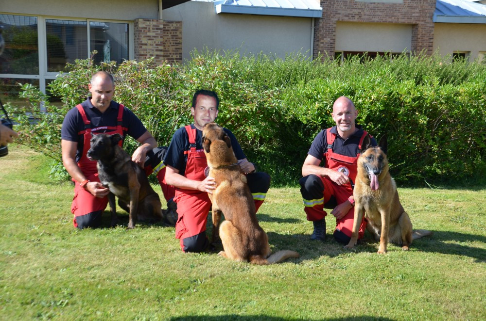

Maxime Duchêne, l'homme de la situation
[MAGAZINE] Chaque année, en hiver, de nombreux accidents de haute montagne ont lieu. Grâce à une vingtaine d’équipes cynotechniques, dont Maxime fait partie, le pire est souvent évité. Retour sur le parcours d'un homme exceptionnel, qui a su trouver sa voie entre sa passion canine et le métier de Morning Manager.
Amelia Milling, une étudiante sourde de 21 ans, doit une fière chandelle au 6eme sens du chien qui l’a sauvée. L’étonnante histoire a été racontée par la gendarmerie des Deux-Alpes, sur son compte twitter. Alors qu’elle arrive à la Passe du Corbeau, ses bâtons de marche se brisent, elle perd l’équilibre. Commence alors une longue chute de 100 mètres, le long d’une pente abrupte et enneigée. Elle s’écrase sur un rocher… puis dévale à nouveau 100 mètres, expliquent les policiers. Blessée à la jambe, elle ne peut pas se déplacer. Son calvaire durera 12h.
Heureusement pour elle, au même moment, Maxime Duchêne, pompier et maître chien, profite d'un repos pour faire un trek sur les sommets enneigés. Maxime nous racontera que son chien est subitement devenu nerveux, comme s'il avait senti le danger. Faisant confiance à son compagnon, Maxime n'écoute que son courage et rebrousse chemin, tout en sachant que ses reserves d'eau sont limitées. Au détour d'une lisière de forêt, Maxime repère tout de suite la jeune femme. Sa formation de secouriste (il est également fan de Koh Lanta) lui permettra de faire un garot à la jeune étudiante américaine, lui sauvant ainsi la vie.
Un modèle pour nous tous
Après avoir longtemps hésité entre les deux carrières, Maxime a su trouver sa voie à lui. Mixant avec brio deux métiers que tout oppose, c'est un exemple inspirant pour la future génération Z.
Sa formation l'a d'abord conduit sur les pas de son idole télévisuelle, Tobias Moretti, interprête du commissaire Richard Mose dans la série Rex, chien flic. Fervent admirateur (les murs de sa chambre d'adolescent peuvent en témoigner), Tobias est un guide pour Maxime. Il le rencontrera d'ailleurs à plusieurs reprises, allant jusqu'à se faire tatouer son portrait sur le dos. C'est ainsi que Maxime commencera sa carrière de maitre chien. D'abord chez les scoots, il gravira les échelons uns à uns, jusqu'à atteindre le grâle de la profession : Maitre chien sapeur pompier. Maxime est une recrue appréciée de sa hiérachie, ses collègues, ainsi que de la gent féminine.
Maxime avec ses collègues pompiers 
Un nouveau cap
Récompensé de la médaille du mérite animal, Maxime semble être au sommet de sa carrière. Contre toute attente, il opère alors un virage à 180°. Son autre passion, le future of work, n'a pu s'exprimer pleinement au sein de la hiérarchie militaire qu'est celle des sapeur pompiers. Comment inviter le flat managment quand on doit saluer son supérieur en arrivant le matin ? Aussi, décide-t-il de mettre sa carrière entre parenthèse le temps de faire un break, parce que qu'il faut également savoir kiffer dans la vie.
C'est ainsi qu'il postule chez Morning Coworking, cette jeune startup issue de l'immagination débridée de son fondateur, Clément Alteresco. Enfin son sens de l'hospitalité et de l'architecture d'intérieur trouvent un lieu dans lequel s'épanouir. C'est qu'il est doué le petit. En l'espace de deux semaines, il atteind un taux d'occupation de 98% à des prix 20% plus cher que le reste des espaces Morning. Son secret : il n'a pas voulu nous en dire plus, mais des rumeurs dans les milieux autorisés parlent d'un vrai savoir faire commercial, d'une humilité et d'une gentillesse à tout épreuve qui mettent tout de suite ses occupants à l'aise. Enfin, nous n'iront pas jusqu'à dire que son charme ravageur y est également pour quelque chose, ce serait déplacé.
Future of work of dog trainer
Fort de ses succès, Maxime se lance alors dans le projet le plus fou que le monde du coworking ait connu : ouvrir le premier espace CaninworkingTM. Son utopie prend forme : un lieu où les maître chiens peuvent travailler comme les geeks des startups de la Silicon Valley. A coté de son bureau en flex office, des espaces communs dédiés à nos amis à quatres pates : Un parcours d'entrainement, des niches, une piscine à balles. Tout est fait pour qu'ils se sentent bien. Le centre propose également des services dédiés : toilettage, promenade, sortie pipi. A l'heure où nous écrivons ces lignes, le projet pilote qui vu le jour dans le 11eme arrondissemnet de la capitale compte déjà plus une dizaine de startups et le double de chiens. Nous tenions à saluer l'aspect humain de cette aventure. En effet, plusieurs témoins nous ont confirmé que Maxime avait vu juste : mélanger animaux et travail est un vrai plus en terme de calme et de sérénité. Là où les collègues peuvent vous stresser, les canidés sauront vous calmer.
Ce qui semblait à peine crédible y a quelques mois est entrain de se transformer en un succès sans précédent. Tirant profit de son réseau LinkedIn à faire palir Obama, Maxima a rapidement conclu un accord avec la Région Île de France. Ainsi ce n'est pas un, mais 3 centres CaninworkingTM qui seront innogurés courant 2018. Cerise sur le gateau pour Maxime, c'est Tobias Moretti lui même qui viendra innogurer le premier espace CaninworkingTM du monde entier !
(Texte et photos : Ton Gorille qui t'aime)
Mythe et épopée...
( ça c'est copié collé d'internet, no joke inside )
Le chien occupe aujourd’hui une large place dans le secours en montagne. Du chien Barry à l’Anena, retour sur les étapes de cette intégration.
Vers le début du XVIIIe siècle, des chroniques témoignent des premiers sauvetages. À l’époque, les moines suisses de l’hospice du Grand Saint-Bernard utilisent des grands chiens de montagne pour la garde qui se révèlent très efficaces dans la recherche des personnes disparues. Au début des années 1800, les exploits du chien Barry, qui sauve quarante personnes, participent largement à leur renommée. À la suite d’une épidémie, les moines chargés de leur élevage accouplent les derniers survivants avec un terre-neuve. Le croisement donne naissance à une nouvelle race, le saint-bernard, qui devient le chien national suisse en 1887. Ce chien rustique à l’odorat développé participe aux premières missions de recherche de personnes disparues dans la neige.
Mais ce gros chien, pas très endurant et difficile à entretenir, est remplacé plus tard par des chiens plus petits et dynamiques, et aux qualités olfactives identiques. L’hiver 1937-1938, dans les Alpes suisses, dix-huit jeunes garçons sont emportés par une avalanche. Dix-sept sont rapidement retrouvés mais un dernier manque à l’appel. Par hasard, un chien bâtard, qui accompagne la colonne de secours, gratte la neige hors du périmètre de recherche. Les secouristes découvrent la dernière victime encore vivante. À la suite de cet événement, le gouvernement helvétique décide d’intégrer des chiens dans le secours en montagne, d’abord avec l’armée puis avec le Club alpin suisse.
En France, il faut attendre 1956 pour voir arriver chez les CRS de montagne les premiers chiens spécialisés dans la recherche de victimes ensevelies sous la neige. En février 1970, une avalanche sans précédent ravage l’UCPA de Val d’Isère. Avec 39 morts, essentiellement des enfants, la France est sous le choc. Six mois plus tard, un glissement de terrain fait 72 morts sur le plateau d’Assy. Le gouvernement nomme une commission interministérielle pour enquêter sur ces catastrophes et réfléchir à la sécurité dans les stations de montagne. Le 11 octobre 1971, l’Association nationale pour l’étude de la neige et des avalanches (Anena), créée pour l’occasion, se charge de la prévention et la prévision de ces risques. En 1977, le ministère de l’Intérieur valide le brevet national de maître-chien d’avalanches, et attribue à l’Anena l’agrément de la formation des conducteurs et des moniteurs cynotechniques en 1992.
Retrouvez le dernier numéro du magazine Sapeurs-pomiers de France
Abonnez-vous au magazine Sapeurs-pompiers de France